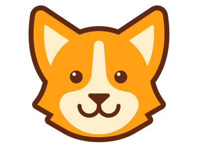

|  |
Corgi - the dog |
It’s easy to see why Corgis are one of the most popular breeds today. They’re compact logs of fur with hearts of gold. What more is there to love? We’ve rustled up ten pup-tacular facts about these guys that will surely put a smile on your face.
Hello everyone!
My name is Galina and I am corgi addicted. That is why I created this site. I plan to add more functionality for this project.
If you have any ideas how to make this site better please contact me.
Contact form is located a little lower.
Thahk you for visiting!